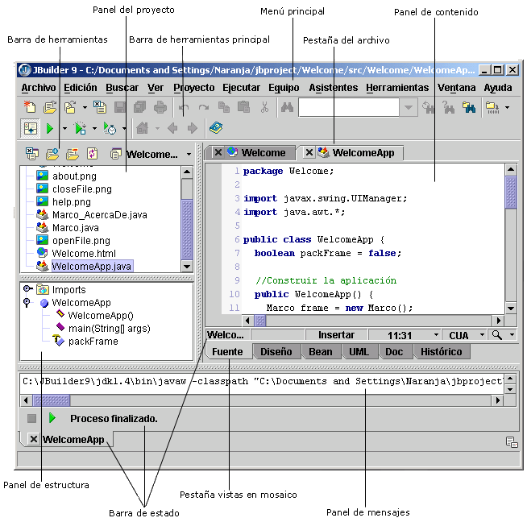

El entorno de desarrollo de JBuilder
Las funciones varían según la versión de JBuilder.
El entorno de desarrollo integrado (IDE) de JBuilder es una ventana que contiene varios paneles y subventanas para realizar la mayoría de las funciones de desarrollo: modificación, diseño visual, desplazamiento, búsqueda, comparación, modelado, generación, compilación, depuración y ejecución. Esta ventana se denomina Visualizador de JBuilder.
Nota: Para ampliar esta ventana a su anchura total, seleccione Ver|Ocultar todo en el menú principal de JBuilder.

El cuadro de diálogo Opciones del IDE (Herramientas|Opciones del IDE) permite personalizar el entorno de desarrollo. Se pueden controlar diversas opciones del IDE, como:
- Aspecto del visualizador
- Tipos de archivo reconocidos
- Opciones de vista web (JBuilder Developer y Enterprise)
- Opciones de XML (JBuilder Developer y Enterprise)
- Opciones de Ejecutar/Depurar
- Opciones de audio
- Opciones de presentación de UML (JBuilder Enterprise)
- Opciones del diseñador de EJB (JBuilder Enterprise)
- Opciones de pantalla (sólo MIDP) (JBuilder Developer y Enterprise)
Si desea más información, consulte:
Introducción a JBuilder: El entorno de JBuilder
Introducción a JBuilder: Personalización del IDE de JBuilder